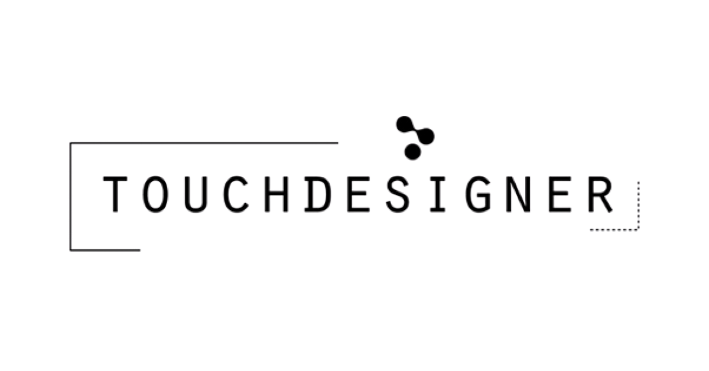

A Creative Technologist
I design and curate digital and physical experiences, often blending the two into interactive projects. At the core of my practice is data collection, using statistics to add depth to stories. Even when the data isn’t directly shown to the audience, it helps shape the work by offering deeper insight into people’s connections, interactions, and the key elements within communities or subcultures.The work I am moving towards emphasises audience participation; either influence outcomes through their input or play with the project. Currently building more experience on collaborative projects of varying scale. As a graduate in Creative Technology, I continue to develop and play with different approaches at the intersection of design, data and interaction.
